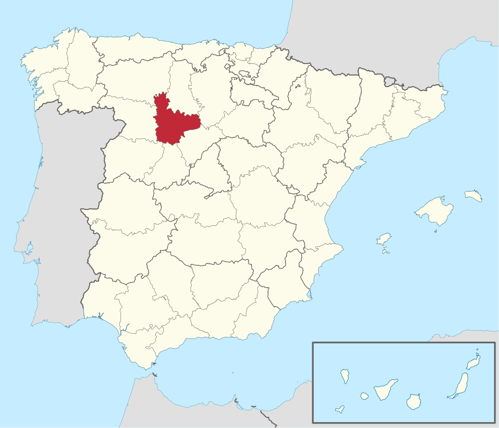
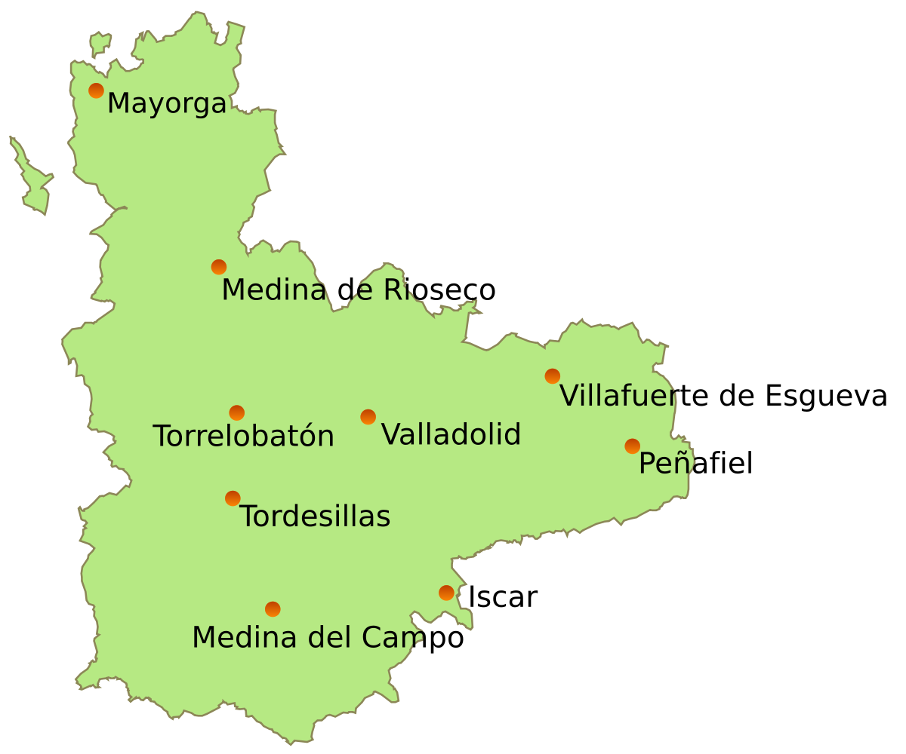
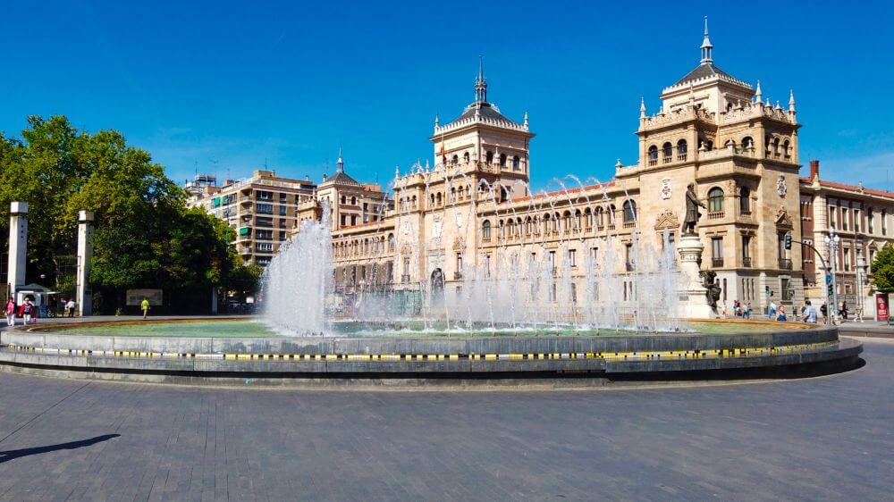
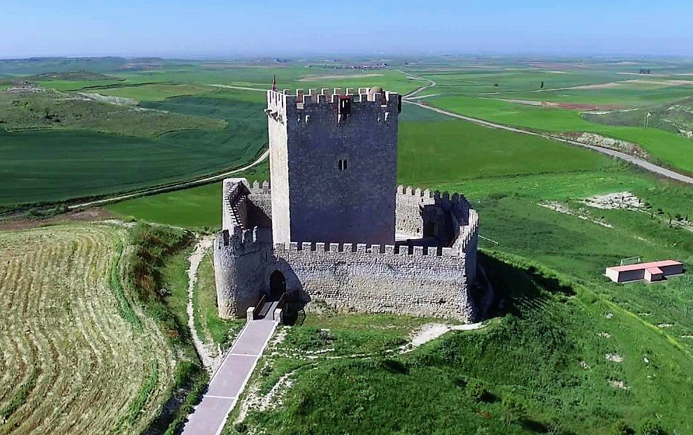
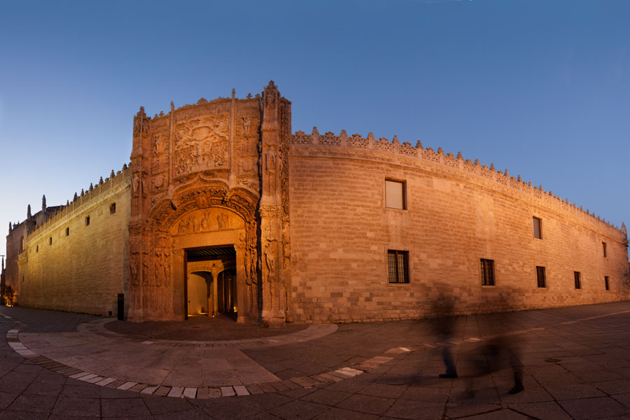
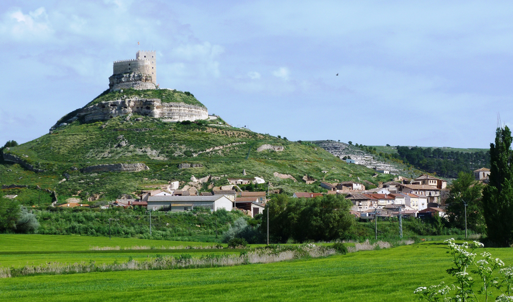

Informacion
Localización
Localidades principales
Geografía de la provincia
Historia
Cultura
Naturaleza
Tradiciones
Otros aspectos de interés
Valladolid
_______________________________________________________________________________________________________________________________________________________________
Localización
Valladolid es un municipio y ciudad española situada en el cuadrante noroeste de la península ibérica, capital de la provincia de Valladolid y sede de las
Cortes y el Gobierno autonómicos de Castilla y León.3 Cuenta, según los datos del INE de 2019, con 298 412 habitantes. Por su parte, el área metropolitana de
la ciudad, conformada por 23 municipios, es la 20.ª de España, con una población de 414 281 habitantes (INE 2013).45 Tiene un área de influencia socio-económica
directa de más de 600 000 personas, distando solamente 47 km de Palencia y otros municipios importantes.

_______________________________________________________________________________________________________________________________________________________________
Localidades principales
Localización Province Valladolid : País España, Comunidad Autónoma Castilla y León.
Grandes ciudades : Valladolid, Laguna de Duero, Medina del Campo, Arroyo de la Encomienda, La Cistérniga, Tordesillas, Tudela de Duero, Íscar, Zaratán,
Aldeamayor de San Martín, Simancas, Cigales, Peñafiel, Medina de Rioseco, Santovenia de Pisuerga, Boecillo, Renedo de Esgueva, Cabezón de Pisuerga, Olmedo,
Pedrajas de San Esteban, Mojados, Villanubla, Portillo, Viana de Cega, Nava del Rey, Fuensaldaña, Valdestillas, Villalón de Campos, Mayorga, Alaejos, Rueda,
Villanueva de Duero, La Pedraja de Portillo, Serrada, Traspinedo, Campaspero, La Seca, Matapozuelos, Villabrágima y Quintanilla de Onésimo.

_______________________________________________________________________________________________________________________________________________________________
Geografía de la provincia
Ubicacion
La ciudad de Valladolid se encuentra en la mitad norte de la península ibérica. Está situada en el centro de la Meseta Norte, división de la Meseta Central, por lo que presenta un paisaje típico, llano y con escasa vegetación. El relieve vallisoletano lo conforma una llanura interrumpida por pequeñas series de colinas que originan un paisaje montañoso de cerros testigos como el de San Cristóbal (843 m), a pocos kilómetros de la capital. Las coordenadas de la ciudad son 41º 38' N 4º 43' O. La altitud del centro de la ciudad es de 690 m s. n. m., mientras que la altitud máxima del municipio es de 863 m s. n. m., la cual se da al noreste del mismo, entre Páramo de Cabezón y Barco de San Pedro; y la altitud mínima es de 671 m s. n. m., la cual se da en el último tramo del río Duero dentro del municipio, a unos metros de su confluencia con el río Pisuerga.El término municipal cuenta con dos exclaves, uno al norte de Villanubla (Navabuena) y otro al oeste de Ciguñuela (El Rebollar).
Clima
El clima de Valladolid es mediterráneo continentalizado. De acuerdo a la clasificación climática de Köppen el clima de Valladolid en el periodo de referencia 1981-2010 es, en general, de tipo Csa (mediterráneo). Sin embargo, la temperatura media en julio y agosto supera solo ligeramente los 22 °C en la zona urbana (concretamente en el observatorio de Valladolid), pero este valor baja de los 22 °C en algunas zonas del municipio de mayor altitud, a las afueras, dándose así en esos lugares un clima de tipo Csb (mediterráneo de veranos suaves).51 El clima de Valladolid está determinado en gran medida por la ubicación de la ciudad en el centro de la cuenca sedimentaria del Duero, que, al estar casi completamente rodeada de montañas que la aíslan del mar, tiene un clima extremado y seco para lo que cabría esperar a casi 700 metros de altitud y a solo 190 kilómetros del mar Cantábrico en línea recta. Las montañas que delimitan la meseta retienen los vientos y las lluvias, excepto por el Oeste, por donde la ausencia de grandes montañas permite un pasillo abierto al océano Atlántico y es por aquí, por Portugal, por donde penetran la mayoría de las precipitaciones que llegan a Valladolid. Los vientos del norte llegan a Valladolid secos y fríos, mientras que los del sur suelen ser cálidos y húmedos, pero es por el oeste y suroeste por donde suele llegar la lluvia a Valladolid. Los vientos predominantes en Valladolid son los del suroeste, y así se ve reflejado por ejemplo en la orientación de la pista del aeropuerto de Villanubla.Las precipitaciones están repartidas de forma bastante irregular a lo largo del año, si bien hay un mínimo acusado en verano y un máximo en otoño y primavera. La precipitación anual es de 433 mm y la humedad relativa media a lo largo del año es del 64 %. Al año hay 2624 horas de sol y 67 días de lluvia.
En cuanto a las temperaturas tal vez lo más destacado sea la importante oscilación térmica diaria. Las diferencias térmicas entre el día y la noche superan en muchas ocasiones los 20 grados. La temperatura media anual es de 12,7 °C. Los inviernos son fríos con frecuentes nieblas y heladas (56 días de heladas de media). La ciudad cuenta con 9 días de nieve al año; aunque son infrecuentes las grandes nevadas por la particular situación geográfica de la ciudad. En las calmas anticiclónicas de invierno, principalmente en las largas noches de diciembre y enero, la inversión térmica produce nieblas, que pueden no levantar en todo el día. Es en diciembre y enero cuando puede aparecer la cencellada. La primavera en sus comienzos aún tiene el frío del invierno, para pasar a ser bastante suave y agradable a medida que nos acercamos al verano. Los veranos son, por lo general, calurosos y secos, con máximas entre 30 °C y 35 °C, pero mínimas suaves, superando ligeramente los 14 °C. En la ciudad es posible registrar alguna noche con mínima tropical superior a 20 ºC. Los otoños son por lo general lluviosos. En sus días se alternan las tardes suaves con temperaturas que rondan los 20-23 ºC al principio del otoño, con días más frescos e incluso fríos a medida que se va acercando el invierno. Los récords de temperaturas son los 40,2 °C, del 19 de julio de 1995, y los –11,5 °C del 14 de febrero de 1983, medidos en el observatorio de la Agencia Estatal de Meteorología (AEMET) situado en el barrio de Parquesol, el más alto de la ciudad.
Aunque este dato sea el oficial, en la ola de frío de enero de 1971, concretamente el 3 de dicho mes, se alcanzaron los –16,4 °C en el aeropuerto de Valladolid, situado a las afueras de la ciudad. Sí es así en el caso de Villanubla, cuya mínima absoluta se produce en esta ola de frío, alcanzándose, el día 3 de enero de 1971, –18,8 °C. En el observatorio de Villanubla las temperaturas son más bajas, debido a que se encuentra a 849 metros de altitud, unos 150 metros más que la ciudad.
Ver video desde youtube - Video realizado por Departamento de Geografía. Universidad de Valladolid
_______________________________________________________________________________________________________________________________________________________________
Historia
Fundacion
Hay indicios datables en el Paleolítico Inferior, esencialmente Achelense, recogido en superficie en las terrazas cuaternarias del río Pisuerga, en Canterac (que actualmente es un gran parque situado a las afueras);16 pero no se puede decir que la ciudad tuviera una ocupación estable hasta la Edad Media, que es posiblemente cuando surgió el topónimo que le da nombre. Los asentamientos posteriores en la actual provincia de Valladolid datan de épocas prerromanas, existiendo en la zona yacimientos de pueblos vacceos, que fueron pobladores de cultura muy avanzada, y, como el resto de pueblos célticos, llegaron a la península procedentes del norte de Europa. El máximo exponente de esta cultura en las cercanías, que fue arrasada por los romanos, es Pincia (Pintia), en la actual localidad de Padilla de Duero.Durante años, se creyó que Valladolid era la antigua Pincia, hasta que las excavaciones arqueológicas demostraron la verdadera ubicación de la ciudad vaccea. En varias zonas del casco antiguo de la ciudad han aparecido restos de época romana: junto a la iglesia de la Antigua aparecieron evidencias constructivas de una villa de cierta entidad (siglos i-iii), así como en las calles Angustias, Arribas, Juan Mambrilla y en las del Empecinado y Padilla, donde se tiene constancia de la aparición de varios mosaicos romanos. También ha habido hallazgos en puntos periféricos de la ciudad; en los alrededores del Monasterio de Nuestra Señora de Prado se descubrió en los años 50 otra villa: la Villa romana de Prado, la cual acoge un amplio conjunto arquitectónico residencial, acompañado de mosaicos. De hecho, un gran mosaico de mármol y caliza, el Mosaico de los cantharus (datado en el siglo iv), preside el hemiciclo de las Cortes de Castilla y León (depositado por el Museo de Valladolid).

Repoblamiento y expansión
En el siglo x Alfonso III de Asturias consolidó la frontera del Reino de Asturias hasta el Duero, pasando a formar parte del Condado de Castilla. En el siglo xi, durante la repoblación de la Meseta, el rey Alfonso VI de León encargó al conde de Saldaña y Carrión, Pedro Ansúrez, y a su esposa, doña Eylo Alfonso, el poblamiento y expansión del primitivo núcleo agrario, que ya existía y se organizaba mediante Concejo abierto. Alfonso VI otorgó el señorío de la misma al conde en 1072, fecha a partir de la cual se produjo el crecimiento de la ciudad. Este hizo construir un palacio para él y su esposa, doña Eylo, que no se conserva, así como la Colegiata de Santa María (lo que le otorgó el rango de villa) y la iglesia de La Antigua. En 1208, el rey Alfonso VIII de Castilla la nombró ciudad cortesana y en 1255 Alfonso X le otorgó el Fuero Real.Tras la temprana muerte de Enrique I de Castilla, nacido en Valladolid, y la abdicación de su madre, Fernando III el Santo fue proclamado en 1217 rey de Castilla, en acto realizado en la Plaza Mayor de Valladolid. Durante los siglos xii y xiii Valladolid experimentó un rápido crecimiento, favorecido por las ferias y privilegios comerciales otorgados por los monarcas Alfonso VIII y Alfonso X El Sabio. Durante estos siglos, la ciudad servía ocasionalmente como residencia real y sede de las Cortes. El primer Alcazarejo fue transformado en Alcázar Real, y la reina María de Molina, reina y regente de Castilla, se hizo edificar un palacio y estableció allí su residencia en torno al 1300. En 1346, el papa Clemente VI otorgó la bula que permitió el paso del Estudio Particular vallisoletano, existente desde la segunda mitad del siglo xiii, a Estudio General o Universidad.
Juan II de Castilla se crio y murió en Valladolid habiendo reinado desde esta ciudad de la que diría que es «la villa más notable de estos mis regnos e aun fuera de ellos». Este rey fue sepultado en la iglesia de San Pablo, hasta el traslado definitivo de sus restos a la Cartuja de Miraflores. En 1425 nacía Enrique IV de Castilla en la desaparecida Casa de las Aldabas de la calle de Teresa Gil. En 1453 Álvaro de Luna, todopoderoso valido de Juan II, es juzgado, condenado y finalmente decapitado en cadalso público en la plaza Mayor. El 7 de diciembre de 1453 se firmó en la ciudad la Concordia de Valladolid, poniendo paz entre Juan de Navarra (futuro rey de Aragón) y su hijo Carlos de Viana.
El 19 de octubre de 1469 Isabel de Castilla y Fernando de Aragón (que sería Fernando II de Aragón) celebraron su matrimonio secreto en el palacio de los Vivero (luego emplazamiento de la Real Audiencia y Chancillería), y pasaron su luna de miel en el castillo de Fuensaldaña. Ya en 1481 contaba Valladolid con imprenta, situada en el monasterio de Prado, de la Orden de San Jerónimo, y bajo los Reyes Católicos la ciudad vivió una etapa de gran dinamismo universitario, que culmina en la creación de los Colegios Mayores de Santa Cruz (por el cardenal Mendoza) y San Gregorio (por fray Alonso de Burgos), lo que hizo de Valladolid uno de los semilleros de la burocracia moderna.

_______________________________________________________________________________________________________________________________________________________________
Cultura
Archivos
El Archivo de la Real Chancillería de Valladolid (ARCHV) es el archivo más antiguo de la ciudad y el único de carácter estatal, ya que depende directamente del Ministerio de Educación, Cultura y Deporte. Creado en 1489, contiene los fondos de la documentación generada por Real Audiencia y Chancillería de Valladolid, máxima instancia judicial de la Corona de Castilla para los territorios situados al norte del río Tajo, desde su creación en 1387 hasta su supresión en 1834. Conserva además los fondos de la antigua Audiencia Territorial de Valladolid (1834-1988), así como el Juzgado de Guerra (siglo xviii), Sala de lo social del Tribunal Superior de Justicia de Castilla y León, Juzgados de los Social de Valladolid y otras instituciones jurídicas. Está ubicado en el edificio del archivo de la Chancillería.El Archivo General de Castilla y León, creado en 2002 es el sucesor del Archivo Central de la Administración de Castilla y León encargado de custodiar la documentación generada en época preautonómica, y en la actualidad, la encargada de custodiar la documentación de los diversos órganos de la Junta de Castilla y León.79 Tiene su sede en el Palacio del Licenciado Butrón.
El Archivo Histórico Provincial, ubicado en el Palacio de los Vivero, sede de la antigua Real Audiencia y Chancillería de Valladolid fue creado en 1932 para custodiar el patrimonio de la Administración central y periférica de la provincia, los protocolos notariales así como la documentación histórica de ayuntamientos de la provincia y otra documentación pública y privada que ingresó en el mismo.
El Archivo Municipal de Valladolid conserva la documentación generada por el Ayuntamiento de Valladolid a lo largo de su historia. Existente desde 1503 con antecedentes en 1375, El documento más antiguo data de 1191 y conserva buen número de pergaminos medievales de entre 1192-1393. Además de los fondos generados por el Ayuntamiento también recoge fondos de instituciones desaparecidas como el Hospital del Esgueva, fondos fotográficos, cartelería, fondos privados, etc. Tiene su sede en la iglesia de San Agustín.
Además, por su cercanía a la capital es destacable el Archivo General de Simancas que guarda la documentación de la Monarquía Hispánica desde los Reyes Católicos hasta la instauración del Régimen Liberal. En cuanto a privados, el más importante es el Archivo Diocesano de Valladolid que atesora los fondos generados por la colegiata y luego por la catedral, la documentación de la curia diocesana, el conjunto de archivos parroquiales de la diócesis y un gran archivo musical con más de 6000 partituras.

_______________________________________________________________________________________________________________________________________________________________
Naturaleza
La provincia de Valladolid cuenta con Espacios Naturales que se distinguen por su valor natural, ya que están amparados y protegidos por la legislación
autonómica y europea en base a su diversidad y calidad medioambiental. Sobresale la Reserva Natural de las Riberas de Castronuño-Vega del Duero, ubicada
en la zona sur de la provincia, un paraíso para los amantes de la naturaleza en todo su esplendor...
Naturaleza y Aire LibreLa protección europea ha declarado nueve Zonas de Especial Protección para las Aves ( ZEPA), y ocho lugares de Importancia
Comunitaria (LIC) en esta provincia. Todas estas protecciones aportan un valor añadido a un territorio teñido de diferentes colores: el amarillo de la
estepa cerealista de la Tierra de Campos; el verde de la paramera de los Montes Torozos o de las inmensas masas arbóreas de la Tierra de Pinares; el azul
que aportan sus despejados e inmensos cielos, o las riberas del Duero y los valles que forman sus afluentes; el blanco de las piedras que sirvieron de
cantera para la construcción de nobles palacios e imponentes castillos; el rojo de los ladrillos material constructivo de palomares, torres e iglesias mudéjares.

_______________________________________________________________________________________________________________________________________________________________
Tradiciones
Valladolid es una ciudad con su historia y cultura incomparable. Su nombre bonito tiene muchas leyendas. Según una de ellas el nombre de la ciudad
compusieron los árabes. Principalmente se llamaba Baladul Valid que se traduce como la ciudad de Valid. Recibió este nombre en honor de gobernadores árabes
grandes. Los históricos critican mucho dicha teoría porque durante la gobernación de los árabes Valladolid fue una aldea muy pequeña y no podia de ninguna
manera merecerse honores de llevar el nombre de gobernador grande.
La teoría verosímil dice que el nombre fue compuesto al unir dos palabras – “tolitum” céltico y “vallis” latino. Primera palabra se traduce como un lugar de
confluencia de aguas y la segunda como una valle. Los nativos respetan mucho su historia y guardan pendiente todas las tradiciones culturales que aparecieron
en Valladolid hace siglos. Mucha importancia en la vida de los nativos tiene la religión. Sobre todo durante las fiestas religiosas en pleno grado se manifiesta
la cultura nacional.
_______________________________________________________________________________________________________________________________________________________________
Otros aspectos de interés
Tras su repoblación, y una vez el valle se vio libre de la ocupación árabe, la ciudad comenzó a expandirse. A finales del siglo xi comenzaron a aparecer una
gran variedad de barrios de carácter gremial, que fueron estableciéndose en distintas zonas, abriéndose calles bajo la influencia directa de la cuestión
económica. Por estas fechas, se celebraban en Valladolid ferias de periodicidad anual, a las que habitualmente concurrían hombres de negocio de diversos
lugares.
En los inicios del siglo xiv, atraídos fundamentalmente por el bullicio comercial, la actividad agrícola y la atención que en la Villa favorecía la Corte,
vinieron a Valladolid gentes, no solo de territorios hispánicos, sino también de otros países, de ascendente cristiano, judío o mudéjar, que compartían el
mismo espacio geográfico. En 1359 la ciudad obtuvo el Privilegio de tener Casa de la Moneda, la cual pervivió hasta el siglo xviii cuando Felipe V concentró
la fabricación de este metal.
En el siglo xvi, la ciudad fue la capital del Reino, y en ella se centralizaron los principales órganos político-administrativos. A ello se sumó el hecho
de que Felipe II, poco antes de morir, otorgó a Valladolid el título de ciudad, y, aunque mediado el siglo xvi se trasladó la capital a Madrid (hasta 1601),
Valladolid siguió conociendo un momento de gran esplendor económico.
| Lunes | +11° | +2° | |
| Martes | +10° | +2° | |
| Miércoles | +16° | +3° | |
| Jueves | +14° | +5° | |
| Viernes | +12° | +3° | |
| Sábado | +11° | +1° |
_______________________________________________________________________________________________________________________________________________________________
Mapa Castilla y Leon

Correo: david.alomon@educa.cyl.es